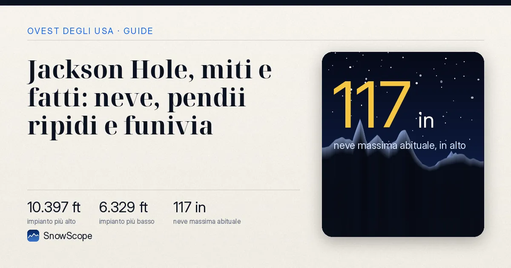

Jackson Hole, miti e fatti: neve, pendii ripidi e funivia
Jackson Hole Mountain Resort ha una reputazione in parte mitica, in parte fondata su fatti reali. Abbiamo controllato sei affermazioni comuni rispetto al terreno pubblicato e ai 46 anni di registrazioni della profondità della neve per distinguere ciò che è vero da ciò che non lo è.
Le previsioni neve in tempo reale per Jackson Hole Mountain Resort nell'app SnowScopeAltezza neve, allerte powder e mappa 3D, gratis.

Mito: Jackson Hole è solo per sciatori esperti
Realtà: il terreno ripido caratterizza davvero la stazione. Con un dislivello di 1.240 m (4.100 ft) e 78 km (49 miglia) di piste, la montagna è famosa per la sua difficoltà. Ma non sono solo gli esperti a poter sciare qui.
Le piste più dolci vicino alla base a 1.929 m (6.329 ft) offrono tracciati adatti ai principianti e agli intermedi cauti. A metà montagna intorno a 2.549 m (8.363 ft) c'è una scelta più variegata. La realtà: gli intermedi troveranno buone giornate qui, ma dovranno pianificare i percorsi con attenzione ed evitare di dare per scontato un'intera giornata di piste facili.
Mito: la neve scompare prima della primavera
Realtà: la montagna alta mantiene la neve molto più a lungo di quello che molti si aspettano. Il picco della stagione di solito cade in aprile alle elevazioni più alte vicino a 3.169 m (10.397 ft), con una profondità mediana di 267 cm (105 in). A metà montagna intorno a 2.549 m (8.363 ft), l'aprile mantiene ancora 169 cm (67 in) in un anno tipico.
Le piste più basse vicino a 1.929 m (6.329 ft) sono diverse: raggiungono solo 116 cm (46 in) e si sciolgono per prime. Ma se segui l'altitudine, puoi sciare fino a fine maggio in cima. La base dei precedenti inverni mostra che la prima neve di solito arriva in cima all'inizio di ottobre e dura fino a fine giugno.
Mito: il cambiamento climatico ha privato la montagna di neve
Realtà: la neve a metà montagna è rimasta stabile nei 46 anni di registrazioni. La profondità tipica nel primo periodo di 15 inverni era 203 cm (80 in); negli ultimi 15 inverni è 205 cm (81 in). La cima ha calato leggermente, da 297 cm (117 in) a 285 cm (112 in), ma entrambi rimangono solidi.
Ciò che è cambiato è il numero di giorni con neve al suolo. A metà montagna, è sceso da 250 giorni nei decenni passati a 239 negli anni recenti. L'inverno scorso, 2025-26, ha raggiunto un picco di 162 cm (64 in) a metà montagna, al di sotto della media. In 9 inverni su 10, metà montagna mantiene almeno 50 cm (20 in) per 22 settimane della stagione.
Mito: la Corbet's Couloir è il motivo principale per visitare
Realtà: la Corbet's Couloir è la linea più famosa e difficile della montagna, e la maggior parte dei visitatori la osserva solo da lontano. Il motivo più forte per venire è l'ampiezza del terreno che mantiene la neve dopo le nevicate a più elevazioni.
La funivia da 100 posti verso la cima, che ha aperto il 20 dicembre 2008, trasporta molti sciatori alle vette alte in un'unica corsa. Da lì, una gamma di piste con angoli diversi significa che puoi trovare condizioni di sciata adatte alle condizioni di neve e tempo della giornata.
Mito: Teton Village è nella città di Jackson
Realtà: Teton Village si trova circa 19 km (12 miglia) a nord-ovest della città di Jackson. Jackson Hole Airport si trova circa 18 km (11 miglia) a nord-est del villaggio. Stare a Teton Village ti mette a pochi passi dagli impianti; stare a Jackson offre più scelta di ristoranti e alloggi, con una guida o un autobus ogni mattina.
Mito: il cancello del backcountry significa che il terreno è sicuro
Realtà: la stazione ha circa 1.215 acri di backcountry segnalato oltre il suo confine. Un cancello segna il bordo del terreno pattugliato. Passarlo significa entrare in territorio soggetto a valanghe.
Prima di partire, leggi la previsione giornaliera del Bridger-Teton Avalanche Center. Porta con te un'apparecchio di ricerca, una sonda e una pala. Viaggia con compagni che conoscono il terreno. L'accesso al backcountry è un privilegio; la previsione di valanghe è la tua guida.
Consigli per sciatori
- Gli intermedi possono sciare a Jackson Hole: pianifica i percorsi intorno al terreno più dolce a valle e a metà montagna.
- Per il manto nevoso più profondo, punta a febbraio fino ad aprile; le vette più alte mantengono la neve più abbondante.
- Stai a Teton Village se vuoi raggiungere a piedi gli impianti; Jackson offre più scelta se guiderai.
- Dicembre accumula neve lentamente a tutte le quote; gennaio fino a marzo sono i mesi più affidabili.
- Non attraversare mai un cancello di backcountry senza controllare la previsione del Bridger-Teton Avalanche Center e portare con te l'equipaggiamento di soccorso.
Su questi numeri
Le altezze neve delle località sono la neve più alta sui pendii superiori alla data indicata; sono stime per un'area, non una misura in un punto. Le previsioni possono cambiare. Leggi sempre il bollettino valanghe ufficiale prima del fuoripista.
Bollettini valanghe ufficiali: Bridger-Teton Avalanche Center
Cita questo articolo
Per ricerca, didattica o stampa: numeri e grafici sono liberamente riutilizzabili con licenza CC BY 4.0 citando così.
SnowScope (2026), Jackson Hole, miti e fatti: neve, pendii ripidi e funivia, https://snowscope.app/blog/it/2026/11/jackson-hole-ski-myths-and-facts.html, consultato il 2026-11-09
SnowScope (Atlas Labs). (2026, November 9). Jackson Hole, miti e fatti: neve, pendii ripidi e funivia. SnowScope snow reports. https://snowscope.app/blog/it/2026/11/jackson-hole-ski-myths-and-facts.html
BibTeX
@misc{snowscope2026jacksonholeskimythsandfa,
author = {{SnowScope (Atlas Labs)}},
title = {Jackson Hole, miti e fatti: neve, pendii ripidi e funivia},
year = {2026},
month = nov,
howpublished = {\url{https://snowscope.app/blog/it/2026/11/jackson-hole-ski-myths-and-facts.html}},
note = {Published 2026-11-09 20:02 UTC; accessed 2026-11-09}
}· CC BY 4.0 · Metodi, dati e strumenti →
Jackson Hole Mountain Resort: neve e temperatura per quota, quest'inverno vs lo scorso (strumenti) →
Segui Jackson Hole Mountain Resort
Gratis: un messaggio quando arriva la neve e il meteo ogni mattina.